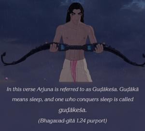

Sañjaya said: O descendant of Bharata, having thus been addressed by Arjuna, Lord Kṛṣṇa drew up the fine chariot in the midst of the armies of both parties.

In this verse Arjuna is referred to as Guḍākeśa. Guḍākā means sleep, and one who conquers sleep is called guḍākeśa. Sleep also means ignorance. So Arjuna conquered both sleep and ignorance because of his friendship with Kṛṣṇa. As a great devotee of Kṛṣṇa, he could not forget Kṛṣṇa even for a moment, because that is the nature of a devotee. Either in waking or in sleep, a devotee of the Lord can never be free from thinking of Kṛṣṇa’s name, form, qualities and pastimes. Thus a devotee of Kṛṣṇa can conquer both sleep and ignorance simply by thinking of Kṛṣṇa constantly. This is called Kṛṣṇa consciousness, or samādhi. As Hṛṣīkeśa, or the director of the senses and mind of every living entity, Kṛṣṇa could understand Arjuna’s purpose in placing the chariot in the midst of the armies. Thus He did so, and spoke as follows.